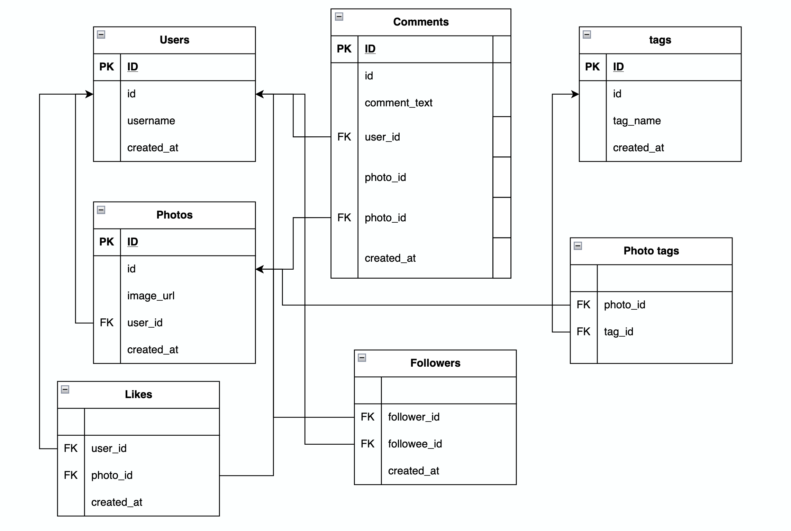

MySQL Instagram User Database Project
This project was completed to conclude my first coding boot camp. Cloning the basic functionalities and focusing on the core entities of a social media platform like Instagram provided the opportunity to work with thousands of data entries and manage a database.
Summary
In sumary, this project involved using fictional user data to provide solutions and answer complex queries faced by businesses and social media platforms. Examples of this includes targeting inactive users with advertising campaigns, identifying bots on the website, working out averages and assessing the best hashtags for brands to use when posting on the site.
This was accomplished using by creating a relational database, using one-to-many and many-to-many relationships, working with multiple tables by using foreign keys.
Project Objectives

{kind=link}
Entity Relationship Diagram created using draw.io
Instagram Database Schema
// Users Schema:
CREATE TABLE users (
id INTEGER AUTO_INCREMENT PRIMARY KEY,
username VARCHAR(255) UNIQUE NOT NULL,
created_at TIMESTAMP DEFAULT NOW()
);
// Photos Schema
CREATE TABLE photos (
id INTEGER AUTO_INCREMENT PRIMARY KEY,
image_url VARCHAR(255) NOT NULL,
user_id INTEGER NOT NULL,
created_at TIMESTAMP DEFAULT NOW(),
FOREIGN KEY(user_id) REFERENCES users(id)
);
// Comments Schema
CREATE TABLE comments (
id INTEGER AUTO_INCREMENT PRIMARY KEY,
comment_text VARCHAR(255) NOT NULL,
photo_id INTEGER NOT NULL,
user_id INTEGER NOT NULL,
created_at TIMESTAMP DEFAULT NOW(),
FOREIGN KEY(photo_id) REFERENCES photos(id),
FOREIGN KEY(user_id) REFERENCES users(id)
);
// Likes Schema
CREATE TABLE likes (
user_id INTEGER NOT NULL,
photo_id INTEGER NOT NULL,
created_at TIMESTAMP DEFAULT NOW(),
FOREIGN KEY(user_id) REFERENCES users(id),
FOREIGN KEY(photo_id) REFERENCES photos(id),
PRIMARY KEY(user_id, photo_id)
);
// Followers Schema
CREATE TABLE follows (
follower_id INTEGER NOT NULL,
followee_id INTEGER NOT NULL,
created_at TIMESTAMP DEFAULT NOW(),
FOREIGN KEY(follower_id) REFERENCES users(id),
FOREIGN KEY(followee_id) REFERENCES users(id),
PRIMARY KEY(follower_id, followee_id)
);
// Photo tag Schema
CREATE TABLE tags (
id INTEGER AUTO_INCREMENT PRIMARY KEY,
tag_name VARCHAR(255) UNIQUE,
created_at TIMESTAMP DEFAULT NOW()
);
CREATE TABLE photo_tags (
photo_id INTEGER NOT NULL,
tag_id INTEGER NOT NULL,
FOREIGN KEY(photo_id) REFERENCES photos(id),
FOREIGN KEY(tag_id) REFERENCES tags(id),
PRIMARY KEY(photo_id, tag_id)
);
Working with the Database
Following the creation of the database, I was provided with a series of challenges representative of those a social media platform would face.
I have included three of the most prevalent issues and their solutions:
1. Inactive Users
Identifying inactive users is a common operation for platforms; in this instance, I determined this by identifying the users that have never posted a photo.
I joined both the users and photos table using a LEFT join; the users that have not posted on the platform had a NULL value in the image_url column which was then filtered by WHERE.
// Identifying Inactive Users:
SELECT username
FROM users
LEFT JOIN photos
ON users.id = photos.user_id
WHERE photos.id IS NULL;
2. Instagram Bots
Identifying potential bots on the platform, this was determined by locating users that have liked every photo on the platform.
I joined the USERS and LIKES tables using an INNER JOIN as we were not trying to identify users with corresponding likes. I then grouped all users that had liked a photo on the platform. Finally, I used the HAVING function to allow me to filter my results based off of subquery - where the number of things a user has liked is the total of photos on Instagram.
// Identify Bots:
SELECT username,
Count(*) AS num_likes
FROM users
INNER JOIN likes
ON users.id = likes.user_id
GROUP BY likes.user_id
HAVING num_likes = (SELECT Count(*)
FROM photos);
3. Five Most Commonly Used Hashtags
Identified the trending hashtags on the platform for brand insight.
I joined both tables for tags and photo_tags. Following this, I grouped by the tag.id to collapse the results. The COUNT function allowed me to collapse this further, displaying the total number of uses alongside each hashtag. The ORDER BY and LIMIT functions then identified the five most used hashtags.
// Identifying 5 Most Commonly Used Hashtags:
SELECT tags.tag_name,
Count(*) AS total
FROM photo_tags
JOIN tags
ON photo_tags.tag_id = tags.id
GROUP BY tags.id
ORDER BY total DESC
LIMIT 5;